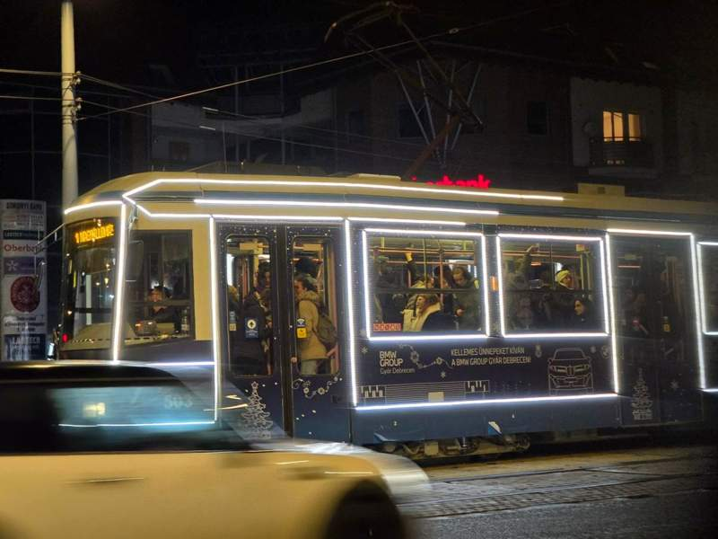
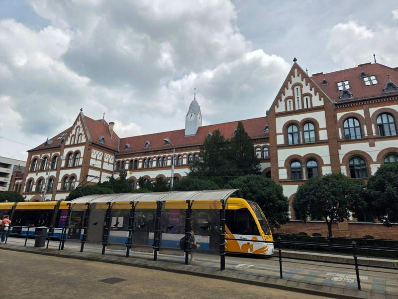
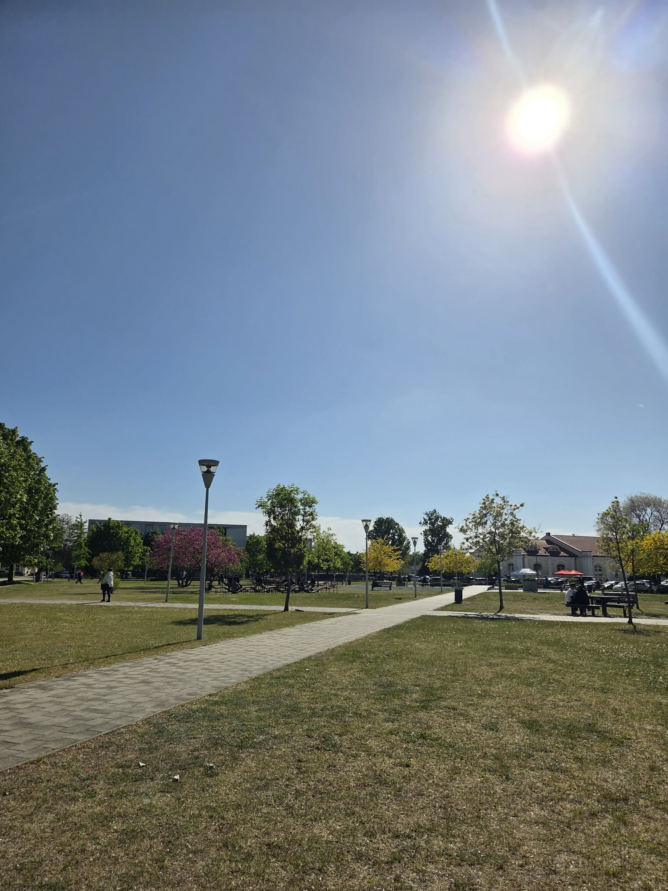

月1,000円で電車も乗り放題！？デブレツェンの交通事情とおすすめ移動手段【デブレツェン大学CS専攻】
みなさん、こんにちは。ハンガリー留学ラボのユウゴです！
留学先の都市に住むにあたって、日常の大きな要素となるのが「移動手段（交通インフラ）」ですよね。
「キャンパスやスーパーへの移動はどうしてる？」 「毎月の交通費はいくらくらいかかる？」 「自転車や電動スクーターは買った方がいい？」
今回は、僕が普段生活しているデブレツェンでのリアルな移動手段の使い分けや、学生限定の破格な交通パス事情、そして「QOLを劇的に上げる移動アイテム」について詳しく解説します！
1. 留学生の移動手段シェア！「自転車」が圧倒的多数派

デブレツェンで暮らす留学生たちの移動手段の割合は、体感的にだいたいこんな感じです！
自転車： 約5割（圧倒的多数！）
電動スクーター（キックボード等）： 約2割
公共交通機関（トラム・バス）： 約3割
僕自身も普段は自転車で大学に通学しています。
住むアパートの場所やキャンパスからの距離によって使い分けは変わりますが、家の近くに路面電車（トラム）の停留所がある人はトラム利用も便利です。僕も市街地（ダウンタウン）へ遊びに行く時や、ブダペストへ向かうためにデブレツェン駅に行く時はよくトラムに乗っています。
日本の電車のように寸分狂わず時間通りに来るわけではありませんが、トラムは運行本数が多いので多少遅れても特に不便は感じません。一方で、バスはトラムほど本数が多くないため、少し不便に感じることもあります。
また、トラムもバスも基本的には市内の中央エリアを走っているため、中心部から離れた場所に住んでしまうと移動に困ることが増えるので注意が必要です。
2. 月1,000円！？学生だけの神パス「ハンガリーパス」

ハンガリーに留学して一番驚いたことのひとつが、学生向けの交通パスのコスパの良さです。
ハンガリーの学生証を持っていると、「ハンガリーパス（Hungary Pass）」という最強の学生割引定期券を購入できます。
これ、何がすごいかというと、月額たったの1,000円程度（約1,890 HUF）なんです！
しかも、デブレツェン市内のトラムやバスが乗り放題になるだけでなく、なんとブダペスト市内の交通機関や、デブレツェン〜ブダペスト間を結ぶ長距離電車（国鉄）までもが乗り放題になります！
購入や利用もスマホアプリで完結し、車内検札の際にアプリのバーコード画面を見せるだけ。日本で毎月高い通学定期を買っていた身からすると、破格すぎて感動するレベルです。
3. 自転車は必要？「徒歩のみ生活」のリアルとQOL

「徒歩だけで生活は完結できる？」という質問もよく受けるのですが、「不可能ではないけれど、ちょっとしんどい」というのが本音です。
大学に通うだけならトラムやバスを使えば困りませんが、日々の食料品や日用品の買い出しで、重い荷物を持って徒歩で移動するのは地味に大きなストレスになります。
そのため、よっぽどの理由がない限り、自転車は買って絶対に損はないアイテムです！自転車が1台あるだけで、買い出しやお出かけの快適さ（QOL）が段違いに上がります。
4. これから渡航する人へのアドバイス

最後に、デブレツェンでの移動アイテム購入のアドバイスです！
新品の自転車を正規店で買うとそれなりの値段がしてしまいます。そのため、現地についてから先輩や帰国する留学生から中古の自転車を安く譲ってもらうのがおすすめです。
また、予算に余裕があれば「電動スクーター（電動キックボード）」を買うのもかなり良い選択肢です！ 自転車よりは初期費用がかかりますが、4年間の在学期間で割れば1ヶ月あたりは安いですし、移動がめちゃくちゃ快適になります。
交通ルール（車道の走り方や標識など）にだけはしっかり注意して、安全で快適なハンガリー生活を送ってくださいね！
学生用全国パスは1,890 HUF。利用には有効な学生証が必要です。長距離列車の指定席料金は別途必要な場合があります。利用範囲をDKV公式サイトで確認する／公式料金表を見る